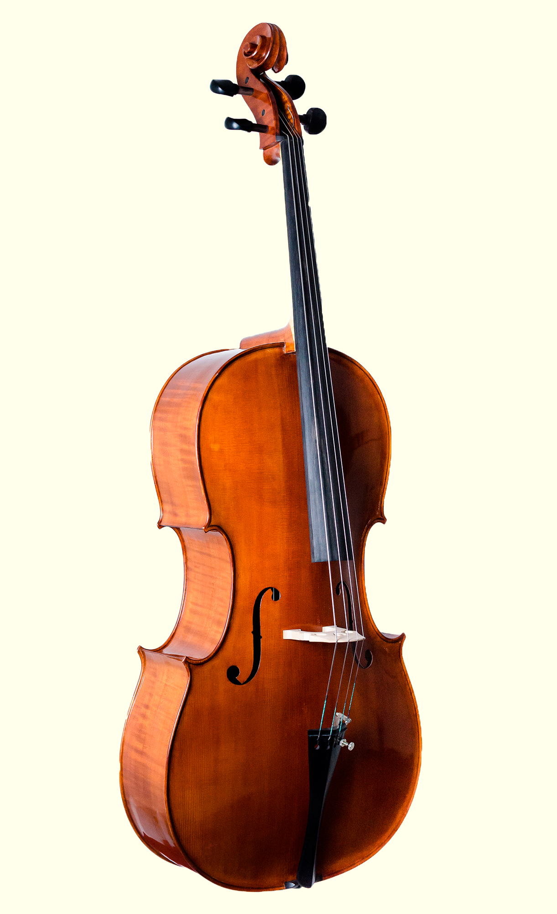

VIOLONCHELO
CARACTERSTICAS
As partes do violoncelo são praticamente as mesmas dos outros instrumentos de cordas fretados. A caixa de ressonância, ou corpo do violoncelo, consiste em uma tampa superior, uma tampa inferior e uma tira, que é um pedaço de madeira que une as duas tampas, criando uma caixa vazia. Dentro desse corpo está a moldura, que é uma estrutura de reforço das tampas e serve para controlar a vibração, e a alma, bastão em cruz de madeira que une as duas tampas do violoncelo em seu meio, e serve para fazer o violoncelo entrar em ressonância com as cordas. Na tampa superior há dois orifícios pelos quais sai o som, chamados de efes (por sua forma se assemelhar a esta letra) ou orelhas. Em ambos os lados do corpo, existem dois decotes ces, que são duas concavidades que permitem uma melhor pega do instrumento com os joelhos e, sobretudo, permitem que o arco passe e não colida com o corpo ao tocar as cordas laterais, neste caso, o do e o la, em torno desta caixa, na qual estão as restantes estruturas. Partindo de cima, encontrará primeiro a cabeça (com o rolo e o caravilleiro, onde se inserem as caravilhas, que servem para segurar as cordas), o mastro e o diapasão (sem trastes, como todos os instrumentos da família do violino , ao contrário da guitarra). Mais para o meio do instrumento, fica a ponte e um pouco abaixo da corda (que segura as cordas e ajuda a afinar o violoncelo, pois estão incluídas inclusive as teclas, pequenas peças de metal com a mesma função das caravelas). Na parte inferior está o botão, de onde sai a pá, que é uma peça de metal, cuja função é apoiar o instrumento no chão e ajustar sua altura para o conforto do violoncelista. Embora o tamanho padrão do violoncelo seja 4/4, existem outros instrumentos menores, como 3/4, 1/2, 1/4 ou 7/8. [2] Os violoncelos barrocos são um pouco menores do que os modernos.
TÉCNICA
A execução mais comum é a fricção do arco nas cordas. Antes de tocar o instrumento, o violinista passa sobre as cerdas uma resina chamada breu, que tem o efeito de produzir o atrito entre as cerdas e as cordas, gerando o som. O som produzido pelas cordas é transmitido ao corpo oco do violino, denominado caixa de ressonância, pela alma, um cilindro de madeira que fica dentro do corpo do violino, mais ou menos abaixo do lado direito do cavalete.
CORDAS E AFINAÇÃO
Notas emitidas pelas quatro cordas do violoncelo (quando pressionadas no ar); à direita, na clave de sol a nota mais aguda que pode tocar a primeira corda do violoncelo (a la5), e a nota mais aguda que pode tocar a primeira corda executando uma gaita (a la7) As cordas são nomeadas de acordo com sua afinação: a primeira corda (contando da mais aguda para a mais grave e da direita para a esquerda na imagem) é lã, a segunda corda é ré, a terceira corda é sol e a quarta corda é Faz. Como a viola, mas numa oitava mais séria. [5] (ExampleCello strings.ogg Cello strings.ogg (help · info)) O registro geral do violoncelo ocupa pouco mais de quatro oitavas: vai do do2, duas oitavas abaixo da central e que se gera vibrando -com o dedo ou com o arco- a corda mais grave do ar, que significa sem apoiar nenhum dedo na corda no mastro, até dó6 (na posição mais aguda da primeira corda la2), embora notas mais agudas (agudas) possam ser alcançadas, pois não há limitação física. Outro método de obter notas muito altas é com harmônicos. Existem dois tipos de harmônicos: O primeiro, chamados de harmônicos naturais, são produzidos tocando (e não pressionando) a corda em suas frações (1/2, 1/3 ou 2/3, 1/4, ...). Os últimos, chamados de harmônicos artificiais, são uma combinação de pressionar a corda e tocá-la em outro ponto. Os últimos são os mais difíceis de alcançar. Ao emitir as cordas do violoncelo sons graves, pois as partituras geralmente não são escritas em clave de sol, mas o mais comum é escrevê-las em clave de sol na quarta, que é o símbolo visto na imagem à esquerda das notas. Mas é relativamente comum que as teclas sustenidas usem outras teclas, especialmente uma quarta tecla C e uma clave de sol. No início, as cordas eram cordas de tripa, menos resistentes do que o metal, mas dando um som mais puro e quente. Essas cordas foram usadas até o século XX. Após a Segunda Guerra Mundial, o uso de cores tornou-se generalizado.